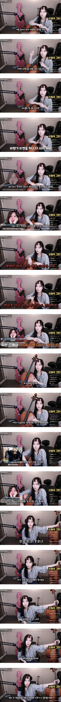

246 · 2 · 6 시간 전 · 원문

어린이 요금은 어린이 복지로 할인하는거라 성인요금으로 받는건 이해가는데
왜 돈은 똑같이 받고 기내식과 마일리지는 적립을 안해주는....?
수집 당시 댓글 2개
채권팔이소년 · 3 시간 전
한사람 여권으로 두표 사는게 되는구나. 생각해보니 스모선수 같은 사람도 두표 산다던데, 온라인으로 여권번호 없이 두표 입력이 되나
미더덕휴전 · 11 분 전
철 들기 전엔 굳이 저걸해야 했나 그생각 했었는데 유나이티드가 기타 개작살 낸 사례 보고 생각 고쳐 먹었음.
한사람 여권으로 두표 사는게 되는구나. 생각해보니 스모선수 같은 사람도 두표 산다던데, 온라인으로 여권번호 없이 두표 입력이 되나